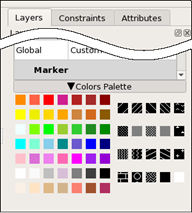

The layer properties determine how the Calibre Pattern Matching GUI displays different layers. Layer properties can be set in the GUI and saved to a Calibre DESIGNrev layerprops file. You can load an existing layerprops file to set the layer properties used by the GUI.
The layerprops file defines the layer name, color, and fill pattern. See “layerprops File Format” in the Calibre DESIGNrev Layout Viewers User’s Manual.
Layer properties apply to all pattern libraries open in the GUI, and to newly created libraries and patterns. When you save layer properties from the GUI or load a layerprops file, the layerprops file is applied the next time you open the Calibre Pattern Matching GUI.
(Optional) A Calibre DESIGNrev layerprops file. This is only needed if you want to load an existing layerprops file.
The Calibre Pattern Matching GUI is open. See “Invoking the Calibre Pattern Matching GUI”.
You can load, save, and reset layer properties without a pattern library loaded in the GUI. However, you must load a library and select a pattern in order to set layer properties using the GUI.
To … |
Do this … |
|---|---|
Load an existing layerprops file. |
Choose . |
Save the layer properties defined in the GUI |
Choose . |
Reset layer properties to the default |
Choose . |
Change layer properties using the GUI |
 |